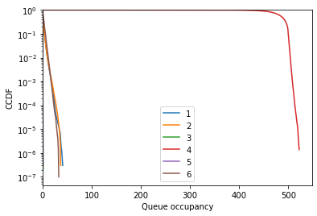
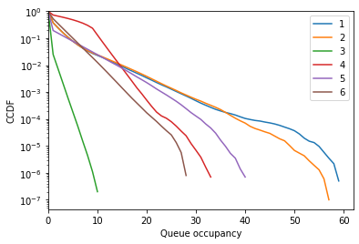
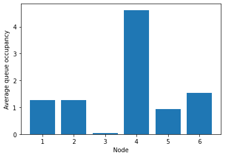
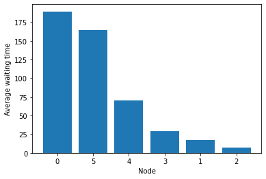
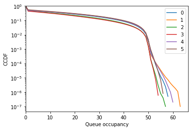
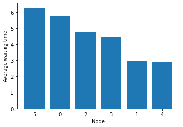

Simulation
The simulator allows to observe the behavior of the system under a given policy.
The following policies are provided:
[1]:
import stochastic_matching as sm
sm.common.get_classes(sm.simulator.generic.Simulator)
[1]:
{'virtual_queue': stochastic_matching.simulator.virtual_queue.VQSimulator,
'fcfm': stochastic_matching.simulator.age_based.FCFM,
'random_node': stochastic_matching.simulator.size_based.RandomNodeSimulator,
'longest_queue': stochastic_matching.simulator.size_based.LongestSimulator,
'random_item': stochastic_matching.simulator.size_based.RandomItemSimulator,
'semi_greedy': stochastic_matching.simulator.size_based.SemiGreedy,
'priority': stochastic_matching.simulator.size_based.PrioritySimulator}
NB: only simple graphs are considered in the present notebook.
Tadpole
Bijective
Consider the following tadpole:
[2]:
from stochastic_matching.display import VIS_OPTIONS
VIS_OPTIONS['height'] = 300
tadpole = sm.Tadpole(m=5, n=3, rates='uniform')
tadpole.show_graph()
This tadpole is not stabilizable: it is bijective and its unique solution has null edges.
[3]:
tadpole.show_flow()
As a consequence, the system is unstable.
[4]:
tadpole.run('fcfm', number_events=10000000)
[4]:
False
The simulator finished before the end (due to queue overflow).
[5]:
tadpole.simulator.logs['steps_done']
[5]:
2756448
[6]:
tadpole.show_flow()
We can look the CCDFs of the run to see what went wrong:
[7]:
fig = tadpole.simulator.show_ccdf(sort=True)

Node 7 overflowed, while node 5 was not in a good shape either.
This can also be showed with average queue sizes:
[8]:
fig = tadpole.simulator.show_average_queues(sort=True)

Let’s change the arrival rates to have something nicer.
[9]:
tadpole.rates = [1, 1, 1, 1, 2, 2, 2, 1]
We can see that it works!
[10]:
tadpole.run('fcfm', number_events=10000000)
[10]:
True
[11]:
tadpole.show_flow()
We can see that the queues are much more tight!
[12]:
fig = tadpole.simulator.show_average_queues(sort=True)

Note that the average queue can be converted in an average waiting time.
[13]:
fig = tadpole.simulator.show_average_queues(sort=True, as_time=True)

Nonjective
Consider the following tadpole:
[14]:
tadpole = sm.Tadpole(rates='uniform', m=4)
It is bipartite and does not verify the stability condition NCond (even bipartite NCond), so all solution break the conservation law.
Simulation fails:
[15]:
tadpole.run('fcfm', number_events=10000000, max_queue=100000)
[15]:
False
[16]:
tadpole.show_flow()
Nodes 0, 2, and 4 are in limbo.
[17]:
fig = tadpole.simulator.show_average_queues()

Let’s change the arrival rates to have bipartite NCond (which is not non-bipartite NCond).
[18]:
tadpole.rates = [1, 1, 1, 2, 1]
[19]:
tadpole.run('fcfm', number_events=1000000)
[19]:
True
We can see that it works! FCFM seems to stabilizes even if NCond is not met.
[20]:
tadpole.show_flow()
[21]:
fig = tadpole.simulator.show_ccdf()

Hum, the queues are quite high. Maybe we didn’t wait long enough?
[22]:
tadpole.run('fcfm', number_events=10000000)
[22]:
False
[23]:
fig = tadpole.simulator.show_ccdf()

Not so stable after all… This is not surprising because of the random walk between left and right nodes, which forces queues of arbitrary size if one waits long enough.
Diamond
Consider the following:
[24]:
diamond = sm.CycleChain(tol=1e-4)
ϵ = 0.2
diamond.rates = [2, 2+ϵ, 1+ϵ, 1]
Try fcfm
[25]:
diamond.run('fcfm', number_events=10000000)
[25]:
True
[26]:
diamond.show_flow()
Nodes 0 and 3 are non-empty most of the time.
[27]:
fig = diamond.simulator.show_ccdf()

[28]:
fig = diamond.simulator.show_average_queues(sort=True, as_time=True)

Try random node (we use a seed to have a True result; in practice, random node is highly borderline in this example and overflows relatively often).
[29]:
diamond.run('random_node', number_events=10000000, seed=42)
[29]:
True
[30]:
diamond.show_flow()
[31]:
fig = diamond.simulator.show_ccdf()

[32]:
fig = diamond.simulator.show_average_queues(sort=True, as_time=True)

Try random item.
[33]:
diamond.run('random_item', number_events=10000000)
[33]:
True
[34]:
diamond.show_flow()
[35]:
fig = diamond.simulator.show_ccdf()

[36]:
fig = diamond.simulator.show_average_queues(sort=True, as_time=True)

Trying to reach an extreme feasible solution with a greedy policy
Now we would like to have a greedy policy that tries to move on towards the extreme feasible solutions. Sadly, no such policy exists (cf https://hal.archives-ouvertes.fr/hal-03502084).
Yet, we can try to approach them with priority-based greedy selection. First, look at the extreme points (vertices).
[37]:
for i in range(len(diamond.vertices)):
diamond.show_vertex(i)
We can see that the first vertex prioritizes edges 1 and 3, while the second one prioritizes edges 0 and 4. Let us see what happens if one uses these priorities in a greedy policy.
[38]:
diamond.run('priority', weights=[0, 1, 0, 1, 0], number_events=10000000)
diamond.show_flow()
[39]:
diamond.run('priority', weights=[1, 0, 0, 0, 1], number_events=10000000)
diamond.show_flow()
Not bad, but not perfect. To reach a vertex, we may need to use a semi-greedy policy.
Trying to reach an extreme feasible solution with a semi-greedy policy
[40]:
diamond.vertices
[40]:
[{'kernel_coordinates': array([-0.3347552]),
'edge_coordinates': array([0.99740608, 1.00164032, 0.19934016, 1.0016128 , 0. ]),
'null_edges': [4],
'bijective': True},
{'kernel_coordinates': array([0.6668576]),
'edge_coordinates': array([1.99901888, 0. , 0.19934016, 0. , 1.0016128 ]),
'null_edges': [1, 3],
'bijective': False}]
The first kernel is bijective, we just need to forbid the null edge.
[41]:
diamond.run('semi_greedy', forbidden_edges=diamond.vertices[0]['null_edges'], number_events=10000000)
[41]:
True
[42]:
diamond.show_flow()
We can check that the matching rate on edge 4 is 0.
[43]:
diamond.simulation
[43]:
array([1.000128 , 1.000912 , 0.198784 , 1.00017152, 0. ])
No noticeable impact on the performance.
[44]:
fig = diamond.simulator.show_ccdf()

[45]:
fig = diamond.simulator.show_average_queues(sort=True, as_time=True)

Now we try on the second kernel.
[46]:
diamond.run('semi_greedy', forbidden_edges=diamond.vertices[1]['null_edges'], number_events=10000000)
[46]:
False
[47]:
diamond.show_flow()
So this is unstable but the the matching rate on edges 1 and 3 is 0.
[48]:
diamond.simulation
[48]:
array([1.99512693, 0. , 0.20336808, 0. , 0.99846916])
Performance is bad, as the vertex is bipartite.
[49]:
fig = diamond.simulator.show_ccdf()

[50]:
fig = diamond.simulator.show_average_queues(sort=True, as_time=True)

The solution in that case is to use a semi-greedy policy with threshold.
[51]:
diamond.run('semi_greedy', forbidden_edges=diamond.vertices[1]['null_edges'], threshold=500, number_events=10000000)
[51]:
True
[52]:
diamond.show_flow()
So this is stable with a limited matching rate on edges 1 and 3.
[53]:
diamond.simulation
[53]:
array([1.99940288e+00, 6.00320000e-04, 2.01430400e-01, 0.00000000e+00,
9.98465280e-01])
Performance is controlled by the threshold.
[54]:
fig = diamond.simulator.show_ccdf()

[55]:
fig = diamond.simulator.show_average_queues(sort=True, as_time=True)

Fish
The purpose of this example is to show a case where a family of greedy with priorities can asymptotically reach the vertices.
[56]:
fish = sm.KayakPaddle(l=0, m=4, names=[str(i) for i in range(1, 7)], rates = [4, 4, 3, 2, 3, 2])
fish.show_graph()
Look at the vertices:
[57]:
for i in range(len(fish.vertices)):
fish.show_vertex(i, disp_rates=False)
Let us try to nullify the edge between 3 and 6 with adapted priorities. As this may be unstable, let us pick a large max queue.
[58]:
weights = [0, 2, 2, 1, 0, 0, 1]
fish.run('priority', weights=weights, number_events=10000000, max_queue=1000000)
[58]:
True
[59]:
fish.show_flow(disp_rates=False)
So we managed to almost nullify the edge at the price of making node 4 unstable (it cannot check the conservation law). This can be addressed by using a threshold above which the policy is altered.
[60]:
counterweights = [0, 1, 1, 2, 0, 0, 2]
[61]:
fish.run('priority', weights=weights, number_events=10000000, threshold=500, counterweights=counterweights)
[61]:
True
[62]:
fish.show_flow(disp_rates=False)
And that’s it! The threshold controls the trade-off between the size of queue 4 and the nullity of edge (3, 6).
[63]:
fig = fish.simulator.show_ccdf()

[64]:
fig = fish.simulator.show_average_queues()

[65]:
fish.run('priority', weights=weights, number_events=10000000, threshold=10, counterweights=counterweights)
[65]:
True
[66]:
fish.show_flow(disp_rates=False)
And that’s it! The threshold controls the trade-off between the size of queue 4 and the nullity of edge (3, 6).
[67]:
fig = fish.simulator.show_ccdf()

[68]:
fig = fish.simulator.show_average_queues()

Reaching a highly degenerated vertex
The following model has very injective vertices.
[69]:
import numpy as np
codomino = sm.Codomino(rates=[2, 4, 2, 2, 4, 2])
codomino.base_flow = np.array([1.0, 1.0, 1.0, 2.0, 0.0, 1.0, 1.0, 1.0])
codomino.vertices
[69]:
[{'kernel_coordinates': array([-1., 1.]),
'edge_coordinates': array([2., 0., 0., 2., 2., 0., 0., 2.]),
'null_edges': [1, 2, 5, 6],
'bijective': False},
{'kernel_coordinates': array([-1., -1.]),
'edge_coordinates': array([0., 2., 0., 4., 0., 0., 2., 0.]),
'null_edges': [0, 2, 4, 5, 7],
'bijective': False},
{'kernel_coordinates': array([1., 1.]),
'edge_coordinates': array([2., 0., 2., 0., 0., 2., 0., 2.]),
'null_edges': [1, 3, 4, 6],
'bijective': False}]
In particular the second vertex is made of three unconnected pairs:
[70]:
codomino.show_vertex(1)
Let try to reach it with a semi-greedy policy without threshold.
[71]:
codomino.run('semi_greedy', forbidden_edges=codomino.vertices[1]['null_edges'], number_events=10000000, max_queue=100000)
[71]:
True
[72]:
codomino.show_flow()
As this is a pure semi-greedy, the desired edges are indeed null.
[73]:
codomino.simulation
[73]:
array([0. , 1.9983344, 0. , 3.9980432, 0. , 0. ,
1.9988784, 0. ])
But performance is awful!
[74]:
fig = codomino.simulator.show_ccdf()

[75]:
fig = codomino.simulator.show_average_queues(sort=True, as_time=True)

The solution in that case is to use a semi-greedy policy with threshold.
[76]:
codomino.run('semi_greedy', forbidden_edges=codomino.vertices[1]['null_edges'], threshold=900, number_events=10000000)
[76]:
True
[77]:
codomino.show_flow()
So this is stable with a limited matching rate on forbidden edges.
[78]:
codomino.simulation
[78]:
array([2.3296000e-03, 1.9980880e+00, 5.7600000e-04, 3.9953488e+00,
2.4000000e-05, 2.2704000e-03, 1.9952416e+00, 5.2704000e-03])
Performance is controlled by the threshold.
[79]:
fig = codomino.simulator.show_ccdf()

[80]:
fig = codomino.simulator.show_average_queues(sort=True, as_time=True)

[81]:
codomino.run('semi_greedy', forbidden_edges=codomino.vertices[1]['null_edges'], threshold=50, number_events=10000000)
[81]:
True
[82]:
codomino.show_flow()
[83]:
codomino.simulation
[83]:
array([0.0476176, 1.9534336, 0.034488 , 3.9177056, 0.0123184, 0.033208 ,
1.9525792, 0.0485968])
[84]:
fig = codomino.simulator.show_ccdf()

[85]:
fig = codomino.simulator.show_average_queues(sort=True, as_time=True)
